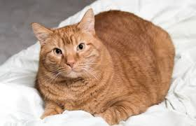
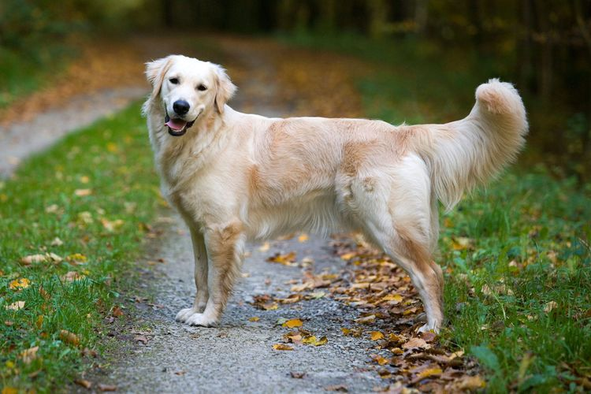

Pets
1. Bacon Q Dog

2. bacon.jpg
3. Brown labradoodle wearing a colorful lei.
4. Bacon Q. Dog is a 9yr old labradoodle. He prefers to spend his days lounging among the three different beds/couches that his family has gifted him. He enjoys a walk or two around the neighborhood, as long as he can pretend that he doesn't see any of the other animals to avoid the embarrassment of not wanting to admit he has no wolf-like skills in chasing them.
5. At night just as the rest of the family is ready to relax, Bacon suddenly wants to release all of his energy. He will place his toys on a mini couch and frantically drag the couch around, giving his toys "a ride." There is also a lot of rolling. Lots and lots of rolling.
6. Photo Gallery

7. bacon_bandana.jpg
8. Brown labradoodle wearing an orange bandana.

9. bacon_graduation.JPG
10. Small labradoodle puppy
11. bacon_agility.mov
12. Girl and dog demonstrating a sit and stay procedure

13. bacon_halloween.JPG
14. Brown labradoodle wearing a pirate costume
15. Likes
- 16. Belly rubs
- 17. Playing tug-of-war
- 18. Sneaking onto the couch
19. Lily Steinmetz
1. Charli

2. charli_laying.jpeg
3. Light brown labradoodle laying on the floor
4. Charlie is a 3 year old labradoodle. He loves to spend time with his family, going on walks, and playing around in the snow.
5. At night Charli likes to watch TV on the bed snuggled up with his parents and getting head scratches.
6. Photo Gallery

7. charli_boat.jpeg
8. Labradoodle sitting and smiling on a boat

9. charli_snow.jpeg
10. Labradoodle sitting in the snow

11. labradoodle.jpeg
12. Labradoodle laying down in the grass

13. charli_puppy.jpeg
14. Small labradoodle sitting on a bed
15. Likes
- 16. Head Scratches
- 17. Playing in the snow
- 18. Relaxing with family
19. Lily Steinmetz
1. Garfield
2. garfield_1.jpeg
3. Orange cat laying on a bed
4. Garfield is a 4 year old orange cat. He is incredibly smart, and loves to play with his toys and climb up his play structures.
5. At night Garfield loves to lay with his family on the couch while they rub his belly.
6. Photo Gallery

7. garfield_2.jpeg
8. Orange cat sitting on a rug meowing

9. garfield_3.jpeg
10. Orange cat in the woods staring off at something

11. cat.webp
12. Orange cat laying down on the couch

12. garfield_4.jpeg
14. Orange cat sitting on a windowsill
15. Likes
- 16. Belly Rubs
- 17. Playing with toys
- 18. Climbing up structures
19. Lily Steinmetz
1. Sunny

2. Sunny_1.jpeg
3. Small golden retriever close up
4. Sunny is a 4 year old golden retreiver. He is so high energy and such a love bug. Sunny loves to play in the park and meet other dogs, loves to play catch with tennis balls, and loves running through sprinklers.
5. At night Sunny likes to relax after all of that excersize, so he sits on the couch with his family to eat and watch TV with them.
6. Photo Gallery
7. Sunny_2.jpg
8. Golden retreiever standing on a trail smiling
9. golden_running.jpeg
10. Small golden retreiver running through the grass

11. Sunny_4.jpg
12. Golden retreiver standing in the grass with tongue out

13. golden_sitting.jpeg
14. Golden retreiver sitting in the grass with tongue out
15. Likes
- 16. The dog park
- 17. Playing Catch
- 18. Running around
19. Lily Steinmetz
1. Nuonuo

2. Nuonuo_main.JPG
3. The side of fluffy Nuonuo's face
4. Nuonuo is a 2 year old cat. He is always very mellow and relaxed and loves taking naps around the house. He also loves to be in the car when his family goes on drives and rest on the dashboard.
5. At night Nuonuo likes to get head scratches on the couch while him and his family relax and watch TV.
6. Photo Gallery

7. Nuonuo_car.JPG
8. A cat lying on top of the dashboard of a car

9. Nuonuo_sleep2.JPG
10. A cat taking a nap on the ground.

11. Nuonuo_wantstoeat.JPG
12. A cat eyeing some food on a desk, he's hungry

13. Nuonuo_sleep1.JPG
13. A cat taking a nap on the floor
15. Likes
- 16. Taking naps
- 17. Going on drives
- 18. Getting head scratches